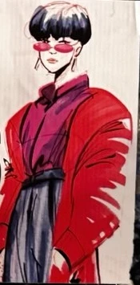
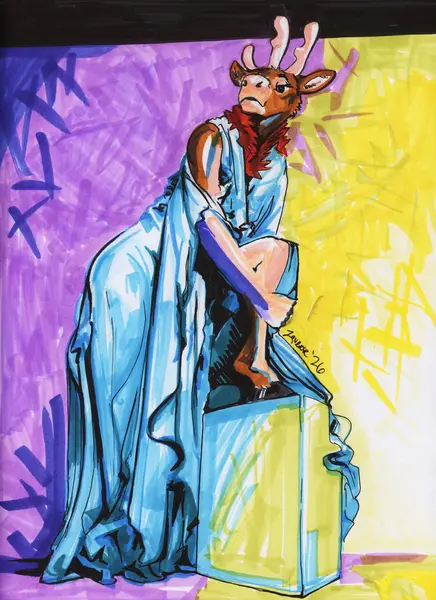
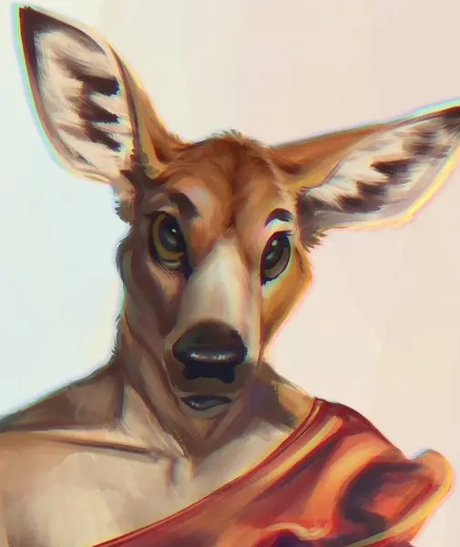
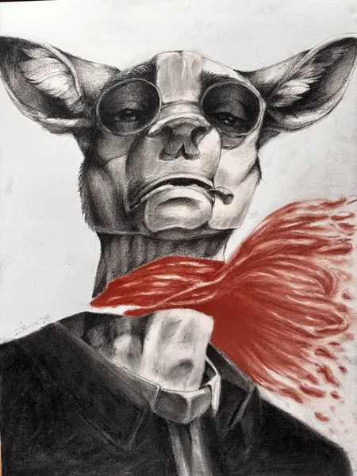
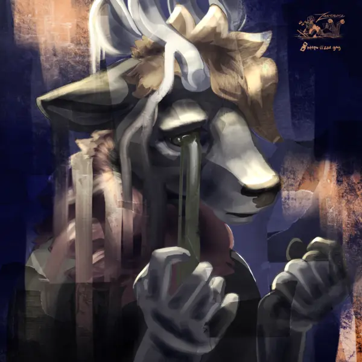
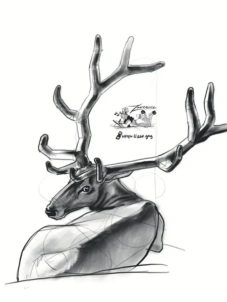
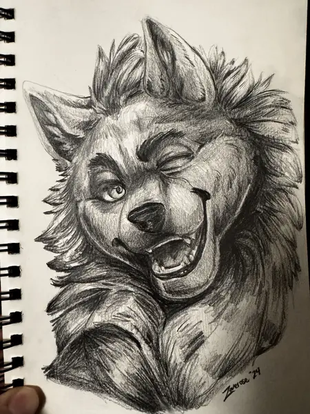
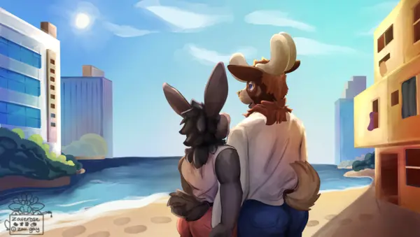

Portfolio
The Gallery
A selection of live event portraits, studio studies, and commissions. Select any piece to view it larger.
















Portfolio
A selection of live event portraits, studio studies, and commissions. Select any piece to view it larger.







